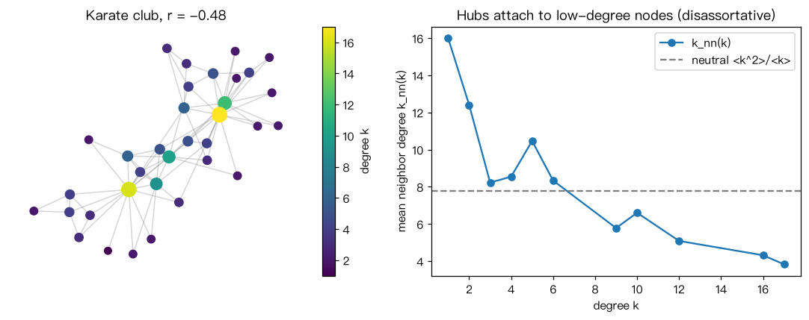

Example01 / 09
按定义手算度相关系数 r 与 k_nn(k)，并与 NetworkX 对照
用三个小网络（星形图、完全二部图之外加一条边、两个大小不同的完全图）演示： r 是“同一条边两端度”的 Pearson 相关；每条无向边要按两个方向各计一次。 k_nn(k) 是度为 k 的节点的邻居平均度。 解读：星形图是最极端的异配（r = -1）；由两个不同大小团组成的网络中，每个节点只连同度节点，r = 1。
Output输出图

Output文字输出
星形图 (1 个中心 + 6 个叶子): r(定义) = -1.0000, r(NetworkX) = -1.0000, k_nn(k) 与 NetworkX 一致: True
k_nn(k): {1: 6.0, 6: 1.0}
两个团 K3 与 K5（不相连）: r(定义) = 1.0000, r(NetworkX) = 1.0000, k_nn(k) 与 NetworkX 一致: True
k_nn(k): {2: 2.0, 4: 4.0}
Zachary 空手道俱乐部: r(定义) = -0.4756, r(NetworkX) = -0.4756, k_nn(k) 与 NetworkX 一致: True
k_nn(k): {1: 16.0, 2: 12.41, 3: 8.22, 4: 8.54, 5: 10.47, 6: 8.33, 9: 5.78, 10: 6.6, 12: 5.08, 16: 4.31, 17: 3.82}
ER 随机图：<k> = 10.00, <k^2>/<k> = 11.01, 所有节点的邻居平均度的均值 = 11.01Code代码
# 用三个小网络（星形图、完全二部图之外加一条边、两个大小不同的完全图）演示：
# r 是“同一条边两端度”的 Pearson 相关；每条无向边要按两个方向各计一次。
# k_nn(k) 是度为 k 的节点的邻居平均度。
# 解读：星形图是最极端的异配（r = -1）；由两个不同大小团组成的网络中，每个节点只连同度节点，r = 1。
import numpy as np
import networkx as nx
def r_by_definition(G):
"""对每条边取 (k_u, k_v) 与 (k_v, k_u) 两个有序对，计算 Pearson 相关。"""
deg = dict(G.degree())
x, y = [], []
for u, v in G.edges():
x += [deg[u], deg[v]]
y += [deg[v], deg[u]]
x, y = np.array(x, float), np.array(y, float)
if x.std() == 0:
return float("nan") # 正则图：所有边两端度相同，相关系数无定义
return float(np.corrcoef(x, y)[0, 1])
def knn_by_definition(G):
deg = dict(G.degree())
knn_i = {i: np.mean([deg[j] for j in G[i]]) for i in G if deg[i] > 0}
out = {}
for k in sorted(set(deg.values()) - {0}):
out[k] = np.mean([knn_i[i] for i in knn_i if deg[i] == k])
return out
cases = {
"星形图 (1 个中心 + 6 个叶子)": nx.star_graph(6),
"两个团 K3 与 K5（不相连）": nx.disjoint_union(nx.complete_graph(3), nx.complete_graph(5)),
"Zachary 空手道俱乐部": nx.karate_club_graph(),
}
for name, G in cases.items():
r_def = r_by_definition(G)
r_nx = nx.degree_assortativity_coefficient(G)
knn = knn_by_definition(G)
knn_nx = nx.average_degree_connectivity(G) # NetworkX 中 k_nn(k) 的函数名
same = all(abs(knn[k] - knn_nx[k]) < 1e-12 for k in knn)
print(f"{name}: r(定义) = {r_def:.4f}, r(NetworkX) = {r_nx:.4f}, k_nn(k) 与 NetworkX 一致: {same}")
print(" k_nn(k):", {k: round(float(v), 2) for k, v in knn.items()})
# 中性网络的预测：k_nn = <k^2>/<k>，与 k 无关（也就是“朋友比你朋友多”的来源）
G = nx.gnm_random_graph(3000, 15000, seed=1)
k = np.array([d for _, d in G.degree()], float)
print(f"\nER 随机图：<k> = {k.mean():.2f}, <k^2>/<k> = {(k**2).mean()/k.mean():.2f}, "
f"所有节点的邻居平均度的均值 = {np.mean(list(nx.average_neighbor_degree(G).values())):.2f}")
# 作图：空手道网络按度着色，以及它的 k_nn(k) 与中性预测 <k^2>/<k>
import matplotlib.pyplot as plt
K = nx.karate_club_graph()
kk = np.array([d for _, d in K.degree()], float)
knn_k = knn_by_definition(K)
fig, ax = plt.subplots(1, 2, figsize=(10, 4))
pos = nx.spring_layout(K, seed=2)
nx.draw_networkx_edges(K, pos, ax=ax[0], edge_color="0.6", alpha=0.4)
sc = nx.draw_networkx_nodes(K, pos, ax=ax[0], node_size=[30 + 8 * d for d in kk], node_color=kk, cmap="viridis")
fig.colorbar(sc, ax=ax[0], label="degree k"); ax[0].axis("off")
ax[0].set_title(f"Karate club, r = {nx.degree_assortativity_coefficient(K):+.2f}")
ax[1].plot(list(knn_k), list(knn_k.values()), "o-", label="k_nn(k)")
ax[1].axhline((kk**2).mean() / kk.mean(), color="gray", ls="--", label="neutral <k^2>/<k>")
ax[1].set_xlabel("degree k"); ax[1].set_ylabel("mean neighbor degree k_nn(k)")
ax[1].set_title("Hubs attach to low-degree nodes (disassortative)"); ax[1].legend()
plt.tight_layout(); plt.show()Run在浏览器中运行
首次加载 Python 环境约需 20–40 秒；可以修改参数后重新运行。